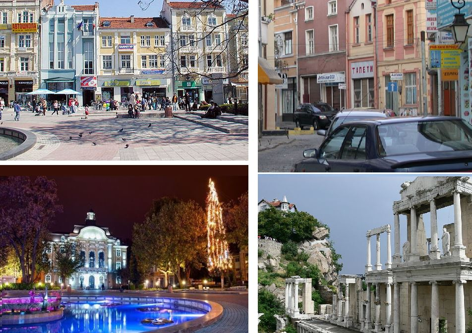

Plovdiv is the second-largest city of Bulgaria. It has a population of 346,893 as of 2018 and 675,000 in the greater metropolitan area. Plovdiv is the culture capital of Bulgaria. It is an important economic, transport, cultural, and educational center. There is evidence of habitation in Plovdiv dating back to the 6th millennium BCE, when the first Neolithic settlements were established. It has been considered to be one of the oldest cities in the world.
